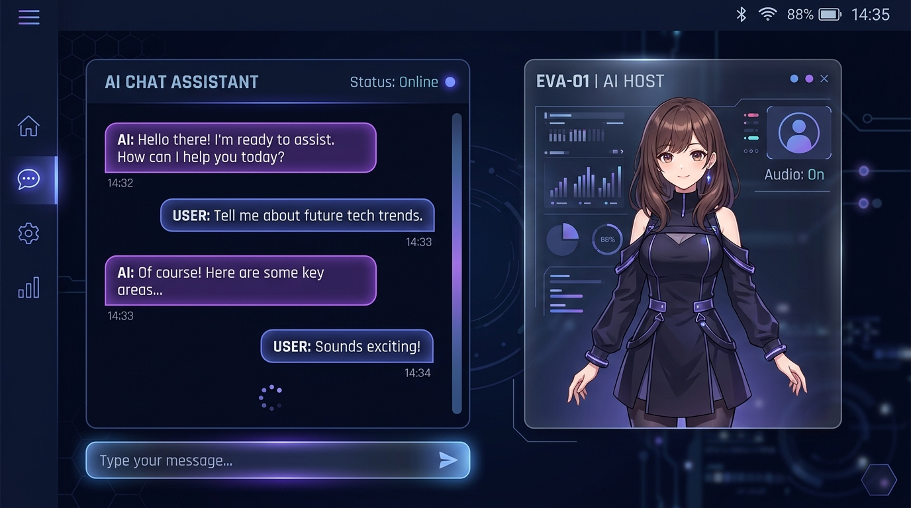
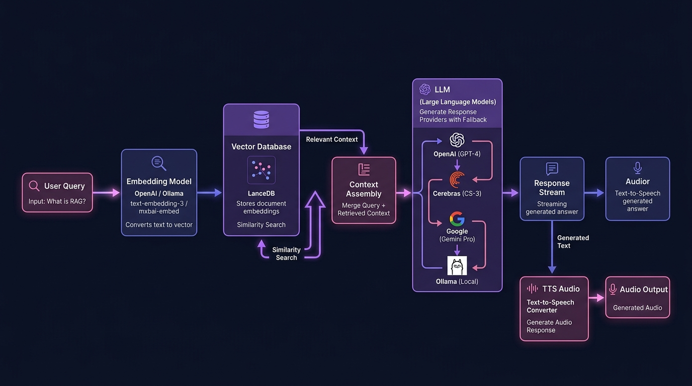

MHT-ChatRAG
A real-time, low-latency, multilingual AI assistant powered by a complex Retrieval-Augmented Generation (RAG) pipeline and a robust Tri-DB persistence layer.
System Architecture
High-level architecture showing real-time client interaction, WebSocket orchestration, and resilient Tri-DB persistence.
- clientChatHandler (WebSocket client)
- Live2D Cubism Avatar (Lip-sync iframe)
- Audio Stream Processor & STT capture
- Typewriter UI Stream Renderer
- wsServer (LWW Abort & State Machine)
- Hybrid RAG Orchestration Engine
- Audio & Predefined Interims Manager
- REST Admin & Static Resource Endpoints
- Sub-millisecond Session Cache
- Audio & Message Queue Buffers
- Transient States & Concurrency Locks
- Structured Relational History
- Client Payloads & Booking Records
- Cold Context Restoration on Reconnect
- Embedded Native Vector Store
- Hybrid FTS + Dense Embeddings
- Domain Medical Knowledgebase
Tri-DB Resilience
Redis manages ultra-fast session cache and queues. PostgreSQL acts as the structured backbone for history and variables. LanceDB holds the permanent vector archive. Disconnections trigger instant restoration from Postgres to prevent LLM context loss.
Last-Write-Wins Concurrency
Handles barge-in natively. If a new message arrives while the LLM is generating, the obsolete stream is proactively aborted (`break`), freeing resources and focusing on the new interaction.
Live2D Avatar Synchronization
Integrating a Live2D model (Hiyori) via an iframe with a bidirectional `postMessage` queue. Combines Web Audio API and audio streaming to achieve real-time lip-sync animations with no noticeable delay.
Security & Modularity
Built with a dedicated JS obfuscation pipeline to protect client-side RAG logic. Employs dynamic component injection for UI elements like modales, avoiding monolithic architectures.
Multimedia Showcase
See the real-time interaction, Live2D synchronization, and RAG pipeline in action.

AI Chat Assistant with Live2D Avatar — Real-time voice & text interaction

RAG Pipeline Architecture — Embedding → Vector Search → Multi-Provider LLM → Predefined Audio & Stream
Advanced RAG Pipeline
The system combines Vector Search and Full-Text Search (FTS) for a Hybrid Retrieval approach. It adapts embeddings on-the-fly depending on the context and dynamically orchestrates chains.
Accepts text or audio transcription (Groq Whisper), extracts temporal references, and normalizes user language.
Queries LanceDB vector embeddings simultaneously with Full-Text Search (FTS) for surgical precision.
Combines state memory from PostgreSQL/Redis, injected clinical docs, dual-time context, and system instructions.
Executes inference with cascading fallback: OpenAI → Groq → Gemini → Cerebras → Local Ollama.
Streams chunk tokens to the client typewriter while coordinating Live2D avatars and localized pre-rendered audio interims.
Key UX Innovations
- Predefined Audio Interims & Low-Latency UI: Emits instant auditory feedback ("Thinking...", "Welcome") in 7 languages while text streams via Typewriter, drastically cutting perceived latency.
- Dual-Timezone Awareness (`dateUtils.js`): Intelligently correlates user local time with clinic time in Bogotá (UTC-5), handling server midnight rollovers seamlessly across 7 locales.
- Transient Messages & Debounce: Shows localized "I couldn't hear you" messages on STT failure without polluting the conversation history, paired with a 500ms microphone debounce to prevent accidental double-clicks.